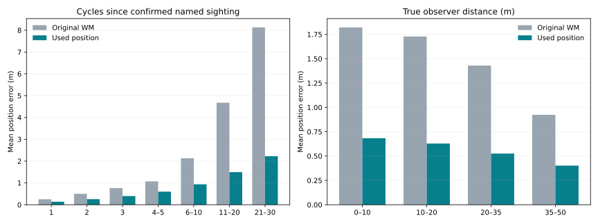
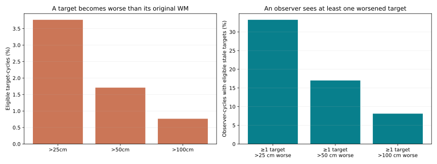
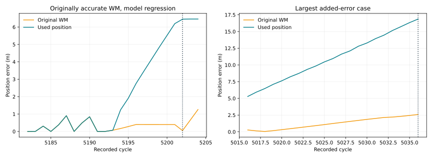

The visual improvement is real, but the model is not uniformly better and the recorded team result is still worse than its opponent. This fresh batch uses cache-v2. Position accuracy improved in all 200 games; gameplay benefit has not been established. The previous duplicate-cache defect is fixed in the current code and this run's metadata identifies that revision throughout.
Generated 2026-11-18 19:19 UTC. Source is the replacement logs/exp5-live-preserve run,
with scores 635–684 and 78/22/100 W/D/L. Old live logs were removed; their archived
reports are historical evidence only. This analysis uses a new dated output
directory and validates source fingerprints, so old cached results cannot be
silently reused under the repeated log-directory name. The new zero run is
in progress and is not included in this report.
Primary denominator: 125,021,864 left-observer target-cycles in PlayOn, true observer distance below 50 m, identified valid stale WM, original count >0, named-sighting age 1–30 and same-cycle truth. Unselected rows retain WM and remain in the denominator. Every sample has equal weight; game averages are not averaged equally.
| Metric | Current cache-v2 preserve |
|---|---|
| Original WM mean error | 142.32cm |
| Used mean error | 53.78cm |
| Mean reduction | 62.21% |
| Games with lower mean than their own raw WM | 200/200 |
| Improved by >1cm | 54.58% |
| Added error >25cm | 3.77% |
| Added error >50cm | 1.71% |
| Added error >1m | 0.77% |
| Maximum added error | 14.28m |
Added error means used error minus raw WM error for the same observer/target/ cycle. The paired comparison scores both states on the actual treatment trajectory; it is not a counterfactual game without the model. Fresh measurements and unsupported/invalid tracks are not in these means.

Named-sighting age in cycles (first column):
| Group | Original mean cm | Used mean cm | Reduction | Added error >25cm |
|---|---|---|---|---|
| 1 | 24.95 | 13.68 | 45.2% | 3.17% |
| 2 | 50.08 | 25.33 | 49.4% | 3.29% |
| 3 | 75.96 | 39.69 | 47.7% | 3.51% |
| 4–5 | 106.80 | 59.90 | 43.9% | 4.43% |
| 6–10 | 213.00 | 93.46 | 56.1% | 5.49% |
| 11–20 | 467.49 | 149.37 | 68.0% | 4.76% |
| 21–30 | 812.62 | 222.52 | 72.6% | 4.34% |
Per-target rates hide how often a multi-object scene contains at least one bad estimate. Across 10,069,393 observer-cycles with at least one eligible stale target below 50 m:
| Scene contains… | Observer-cycles |
|---|---|
| At least one target improved by >25cm | 88.06% |
| At least one target worsened by >25cm | 33.25% |
| At least one target worsened by >50cm | 17.00% |
| At least one target worsened by >1m | 8.12% |
| Both an improvement >25cm and a regression >25cm | 31.85% |
| A target within 10 m of observer worsened by >25cm | 4.17% |

Both improved and worsened objects can be present in the same frame. These are descriptive observer-target exposures, not percentages of wrong decisions or goals caused by the model. They are correlated across objects, time and agents. The model can visibly correct many positions and still put one tactically important player on the wrong side of a pass/interception decision.
There were 221,353 observer-target episodes with added error>1m; 100,211 lasted at least 3 consecutive cycles, maximum 28 cycles. These are not independent real-world incidents; multiple observers can describe the same physical play.
When the original WM error was below 10 cm, mean error changed 1.43→4.79cm across 25,464,403 eligible rows;7.37% added
25cm. Large improvements on already-bad states dominate the global average, while some already-good states are damaged. These truth-defined groups are diagnostics, not directly available live gates.
| Group | Original mean cm | Used mean cm | Reduction | Added error >25cm |
|---|---|---|---|---|
| 0–10cm | 1.43 | 4.79 | -234.0% | 7.37% |
| 10–25cm | 17.45 | 17.80 | -2.0% | 7.50% |
| 25–50cm | 39.57 | 23.27 | 41.2% | 2.18% |
| 50–100cm | 74.82 | 41.56 | 44.5% | 2.50% |
| 1–2m | 140.06 | 72.85 | 48.0% | 2.74% |
| 2m+ | 588.89 | 173.67 | 70.5% | 1.82% |

Both selected cycles were replayed with the original PyTorch pipeline: 41 eligible outputs, maximum difference 0.00005938m including CSV rounding, zero selection disagreements. These failures reproduce in the learned model; the checked cases are not explained by a different native computation. The routing score is not a calibrated probability that a position is correct.
The batch did not retain original RCGs at the checked output location. I exported reconstructed positioning clips from the 22 agents' same-cycle truth columns, plus the actual recorded raw/used positions as dlog. Both 41-frame clips pass librcsc's native RCG parser. They are not original server RCGs: action counters and unrecorded action-state bits are placeholders, so do not use them for action analysis. No model was rerun to generate the drawn overlays.
replays/accurate-wm-damaged as the left Debug Message directory, enable
WM, select observer 5, and seek cycle 5202.replays/largest-added-error as left debug directory, select observer 5,
seek cycle 5036.Orange circle=raw WM; cyan square=used estimate; monitor players=reconstructed truth. The clip README/provenance files record sources and limitations.
This section samples 10 evenly spaced complete games /110 left observers, selected without looking at outcomes. It is not all 200 games. Distances to the ball are labels for reporting, never model inputs from truth.
| Group | Original mean cm | Used mean cm | Reduction | Added error >25cm |
|---|---|---|---|---|
| Target within 2 m of ball | 46.94 | 33.18 | 29.3% | 1.55% |
| Target 2–5 m from ball | 51.62 | 34.12 | 33.9% | 4.42% |
| Target at least 5 m from ball | 146.19 | 54.35 | 62.8% | 3.67% |
| Observer within 3 m of ball | 204.64 | 68.68 | 66.4% | 3.92% |
| Next-cycle forecast, same valid WM velocity | 70.79 | 47.05 | 33.5% | 1.77% |
For stale targets within 2 m of the ball, the gain is 46.94→33.18cm, about 29.3%. At least 5 m from the ball it is 62.8%. The aggregate percentage gain therefore overstates the percentage improvement for this ball-near subgroup; sample counts and tactical relevance differ. Fresh accurate positions are preserved, so this is a statement about eligible stale rows, not all ball contacts. The one-step forecast uses the same valid WM velocity for both points and consecutive PlayOn truth; it is not a full planner simulation.
No new activation/routing defect was identified in this review. This is not a proof that every possible planner interaction is correct; the visual scene and point errors cannot alone validate tactical choices.
14.46% of selected/applied positions below 50 m retain original count≥15. The current player-intercept simulator skips such a player; pass/dribble/shot paths also apply age gates or extra reach margins. These counts measure exposure to gates, not how often a particular branch determined an action. Position is corrected but velocity, body and seen ages are unchanged.
The in-progress new zero batch has cache-v2 /left apply-zero /right off metadata in the checked sample. Its gameplay result is pending. It tests a different decision-age policy, not a different network. No live model, library, threshold or game configuration was changed during this review.
Scores are 635–684, wins/draws/losses 78/22/100. Mean left-minus-right goals are −0.245/game; whole-game bootstrap 95% interval [-0.585,0.100]. Decisive-game win rate is 43.82%, Wilson 95% interval [36.74%,51.16%]. The ordinary 39% win rate includes draws and should not be compared directly with 50% as though all games were decisive.
The observed result is worse and there is no established gameplay gain. The intervals still include a balanced result; these data do not isolate a single cause for the lost goals. Better point accuracy, nonzero tail risk, stale-motion information and age-dependent action rules can coexist.
Finish the already-running cache-v2 zero batch with the same weights/threshold and compare it with this dated run. Do not compare it with the removed legacy zero batch as though both used this integration. There is no reason to repeat this completed preserve batch again from the checks above. Improving scene mean error further is not by itself a sufficient reason for more large trials.
cd /home/nader/workspace/denoise
exp=rcssserver-denoise/experiments/exp5/exp5-s1
analysis=logs/exp5-s1/live-analysis/preserve-cache-v2-200-20261118
.venv-exp5-s1/bin/python "$exp/code/audit_player_gap_batch.py" \
logs/exp5-live-preserve "$analysis" --workers 6
.venv-exp5-s1/bin/python "$exp/code/audit_player_gap_context.py" \
logs/exp5-live-preserve "$analysis/summary.json" "$analysis/context" --workers 6
.venv-exp5-s1/bin/python "$exp/code/audit_player_gap_risk_cycles.py" \
logs/exp5-live-preserve "$analysis/summary.json" "$analysis/risk-cycles" --workers 6
.venv-exp5-s1/bin/python "$exp/code/report_player_gap_cache_v2.py" \
"$analysis" "$exp/reports/live-preserve-cache-v2-200"
The batch reader now checks metadata/data-file fingerprints before reusing a cache and records integration revisions. Whole-game cached summaries stay in the dated analysis directory. Historical reports remain unchanged as data snapshots, separate from this new run. The numerical/model/RCG checks and JSON evidence are alongside this report.